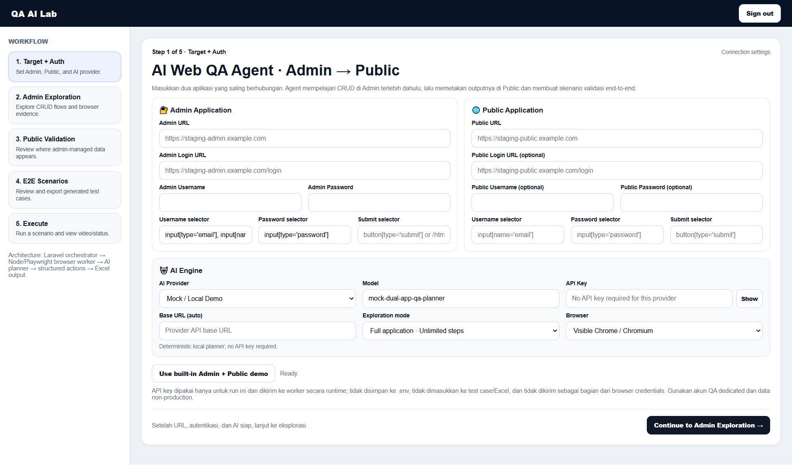
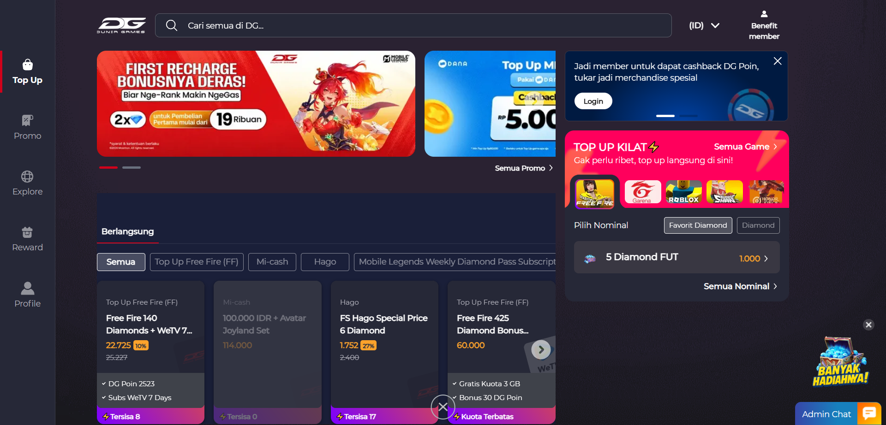
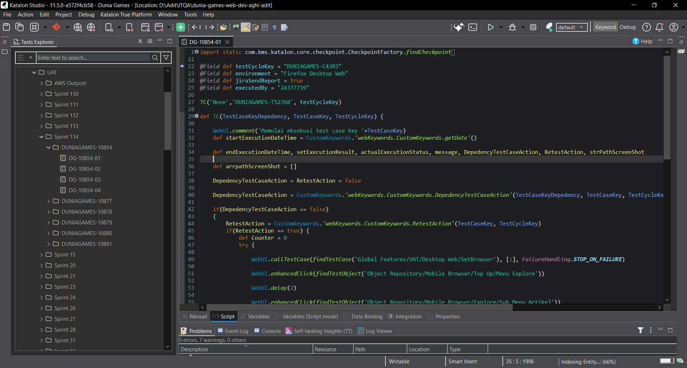

PERSONAL MINI PROJECT
QA AI Lab
A tool concept for generating test cases, exploring a target web application, executing browser tests, and exporting results.
Ask about project ↗I’m a detail-oriented QA Tester who enjoys finding bugs, improving software quality, and making applications more reliable through thoughtful testing.
Focused on manual dan automation testing, test case design, aand clear bug reporting.
I’m a graduate from Nurtanio University, Bandung, informatics engineering study program in 2023. I have experience as a Quality Assurance Engineer. I have good soft skills in communication, able to work under pressure, collaborate, and adapt easily. I’m the type of person who is responsible and able to solve problems.
I’m continuously learning new tools and techniques to become a stronger QA professional.
⌖ Indonesia
✉
gustiaditia8@gmail.com
▣ Open to remote opportunities
Help teams release reliable, user-friendly software through careful manual testing, useful documentation, and automation where it adds value.
Keep only the skills you have used or can confidently explain.
My actual project details.

A tool concept for generating test cases, exploring a target web application, executing browser tests, and exporting results.
Ask about project ↗
Sample scenarios for login, form validation, CRUD flows, and negative cases with expected results and execution status.
View templates ↗
Sample script from Katalon Studio tool for automated testing.
Add code/demo link ↗Starter CSV files can be opened in Excel or Google Sheets.
I’m interested in QA opportunities, collaborations, and learning from software teams. Feel free to reach out.